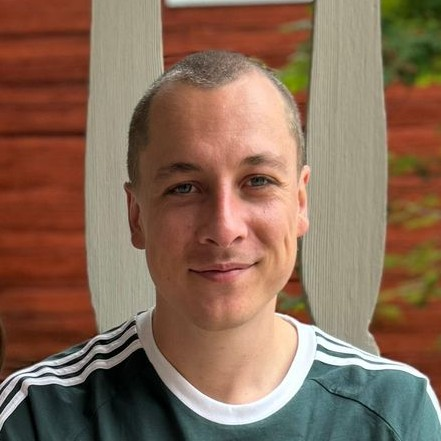

Nicholas (Nico) Krämer
|

|
I am a
machine learning researcher based in Copenhagen.
I do research at the interface of
numerical methods and machine learning,
including topics such as probabilistic numerics, differentiable programming, state-space models, or linear-algebra applications in Bayesian deep learning
(Google Scholar).
I write a bunch of code, mainly in Python/JAX
(Github: @pnkraemer).
|
I am currently a postdoc in
Søren Hauberg's group at DTU.
Before that, I did probabilistic numerics in
Philipp Hennig's group in Tübingen,
and scattered data approximation with Christian Rieger in Bonn.
I studied Mathematics and Business Mathematics in Bonn and Mannheim.
I am a member of the
ELLIS Society
and an affiliated researcher at the
Pioneer Centre for AI (P1).
If you need a three-sentence biography, e.g. for announcing a talk,
[click here].
I go by "Nico",
but use "Nicholas" when writing papers.
Online, I tend to be
@pnkraemer
(and "pn" stands for "Peter Nicholas", not for "probabilstic numerics").
Find my papers on Google Scholar and my code on GitHub.
Talk to me in English or German. I would love to hear from you.
Contact
Google Scholar:
click here
GitHub:
@pnkraemer
Bluesky:
@pnkraemer.bsky.social
LinkedIn:
link here
X:
@pnkraemer
Email:
pekra (at) dtu (dot) dk
News
-
March 2024:
Our preprint on "Numerically robust Gaussian state estimation with singular observation noise" is on arXiv now!
Here is a link.
-
January 2025:
My paper on "Numerically robust fixed-point smoothing without state augmentation" has been now been published by TMLR!
Here
is a link to the PDF on OpenReview.
Here
is a link to the code on GitHub.
-
January 2025:
My paper on "Numerically robust fixed-point smoothing without state augmentation" has been accepted by TMLR! A link to the published paper will follow soon.
-
December 2024:
I am speaking at the
D3S3: Data-driven and Differentiable Simulations, Surrogates, and Solvers
Workshop at Neurips 2024.
-
November 2024:
I will be again talking about adaptive ODE solvers, this time in Oxford.
-
November 2024:
I will be talking about adaptive ODE solvers at the Computer Lab in Cambridge. Here is a link to the announcement.
-
November 2024:
I will be visiting our CUQI-neighbours at DTU Compute to give a talk as a part of their seminar series.
-
October 2024:
Our paper on "Gradients of functions of large matrices" has been accepted as a spotlight at Neurips. Looking forward to presenting this in Vancouver!
Here is a link to the arXiv version.
-
October 2024:
My preprint on "Adaptive probabilistic ODE solvers without adaptive memory requirements" entered arXiv.
Here is a link.
-
October 2024:
My preprint on "Numerically robust fixed-point smoothing without state augmentation" entered arXiv.
Here is a link.
-
September 2024:
My preprint on "A tutorial on automatic differentiation with complex numbers" entered arXiv.
Here is a link.
-
September 2024:
If you're at GenU in Copenhagen (September 18-19), come and say hi! I'll bring a poster on computing gradients of functions of large matrices.
Here is a link to the preprint.
-
July 2024:
I am giving a talk on the "Probabilistic numerical method of lines", this time at
ProbNum24 in London
on July 15.
-
June 2024:
I am giving a talk on the "Probabilistic numerical method of lines" at the
Probabilistic Numerics and Physics-informed Learning
workshop in Helsinki on June 28, which is a part of the
ELISE Wrap Up Conference & ELLIS Community Event
.
-
June 2024:
I am giving a talk on "Gradients of functions of large matrices" at the Pioneer centre in Copenhagen on June 7.
-
May 2024:
Our preprint on "Gradients of functions of large matrices" entered arXiv.
Here is a link.
-
May 2024:
I reactivate this News section because I have not been using Twitter/X much recently.